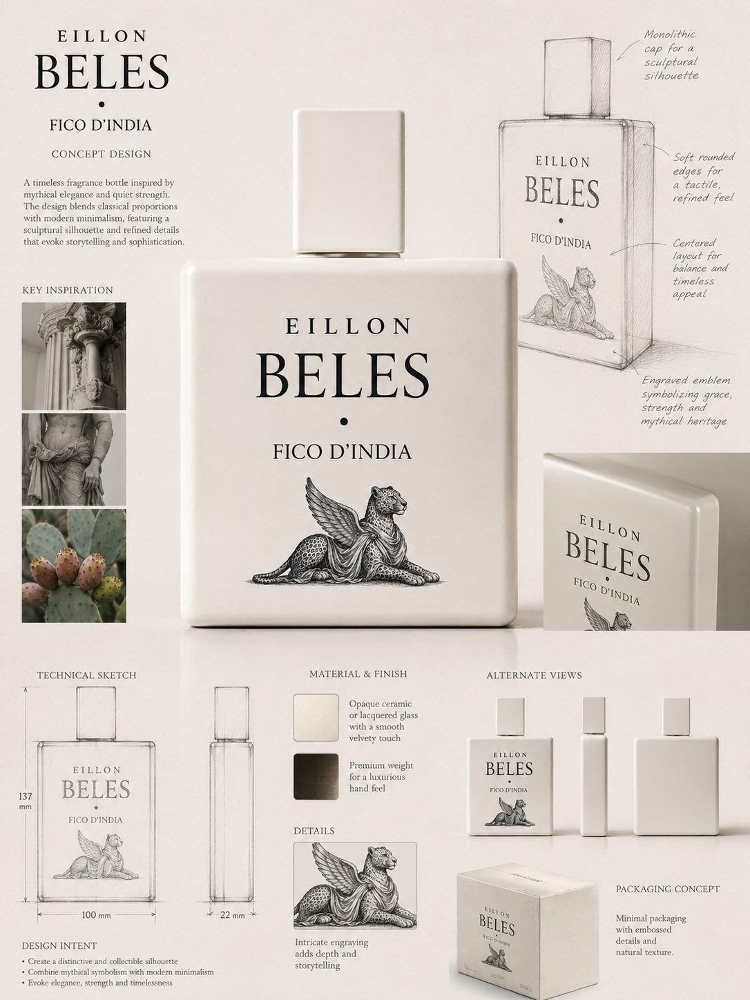

Oil-rich parfums composed in Copenhagen — from raw materials to the finished object on your shelf.
The Studio
Small batches, considered materials.
Every chapter begins as a memory of place. Formulas are layered slowly in the Copenhagen studio — fruit and mineral top notes, floral hearts, and musk-and-stone bases that settle over hours.
People & practice
Named authorship, in-house studio.
EILLON is an in-house studio in Copenhagen — formula, hand-finish, and object direction by Eillon Hansen; digital development by Kenneth Hansen.
Eillon HansenFounder · formula, hand-finish, creative direction, and maison identity.
Kenneth HansenCo-founder · developer of the maison's website, systems, and digital studio.
Composition
EILLON works as an oil-rich parfum house. Concentrations are built for longevity and a close, skin-held trail —
not loud projection. Beles draws on sun-warmed prickly pear and cactus water.
Asmara on rain and espresso over stone. Massawa on Red Sea citrus and salt skin.

The object
Bottle, cap, and accord are developed together — square matte glass, brushed silver, quiet lettering pressed into the face.
Formulas are refined in the studio before any bottle is offered for sale.
Transparency
Ingredients & sourcing
Raw materials are selected for clarity and wear on skin — natural and synthetic molecules combined where each serves the accord.
Citrus, resins, musks, and floral absolutes are chosen for stability in an oil-rich base and for how they evolve over an eight-hour wear.
Material family
Examples in EILLON
Source type
Citrus & fruit
Prickly pear accord, bergamot, orange, pear skin
Natural isolates & safe synthetics
Florals
Hibiscus, jasmine, cactus bloom
Absolutes & nature-identical molecules
Resins & woods
Frankincense, myrrh, sandalwood, labdanum
Ethically sourced naturals where available
Musk & amber
White musk, soft amber, mineral air
IFRA-compliant synthetics & ambroxan
All formulas comply with IFRA standards for their intended product category. As chapters move toward release, supplier notes and batch traceability
are published in the journal — starting with Beles batch BL-001.
How we evaluate wear
Longevity and evolution language on chapter pages comes from studio wear sessions — not marketing guarantees.
For Beles, six wearers applied a standard dose on inner forearm in Copenhagen studio conditions (20–22 °C, office and evening wear)
and logged impressions at 15 min, 3 h, and 8 h intervals.
Results are reported as observed wear: most sessions showed close projection for the first two hours and a fruit-mineral trail still perceptible at eight hours on skin.
Individual skin chemistry varies; we publish methodology so readers can judge the claim.
Safety & traceability
Beles · Fico d'India has been reviewed against IFRA Category 4 limits for fine fragrance.
The formula is vegan; no animal-derived musks. Allergen declarations appear on the chapter page and on batch labels at fill.
Full batch notes and supplier context: Journal · Beles batch BL-001 →.
IFRA conformity statements for sellable batches are available on request before commerce opens.
Manufacturing
Each chapter moves through the same quiet sequence — formula lock, compounding, hand finish, and release.
Formula lock — accord approved in studio, batch size set.
Compounding — small-batch production with resting time before fill.
Hand finish — fill, inspect, and wrap in archival cream paper in Copenhagen.
Release — restock list first, then public boutique window.
Sustainability commitments
Small-batch production to limit waste and overstock.
Recyclable glass flacons designed for long keep, not single-use novelty.
Minimal outer packaging — archival wrap rather than heavy gift boxes by default.
Discovery samples offered where possible so customers can wear before committing to a full bottle.
Supplier review for key naturals — prioritising traceable resins and florals as volumes grow.
No animal-derived musks; all formulas are vegan and IFRA-compliant.
Beles · Fico d'India is hand-finished in Copenhagen — join the restock list for a private note before the public boutique opens.
One email when the next batch is ready — not a marketing drip
No charge today; size interest records intent only